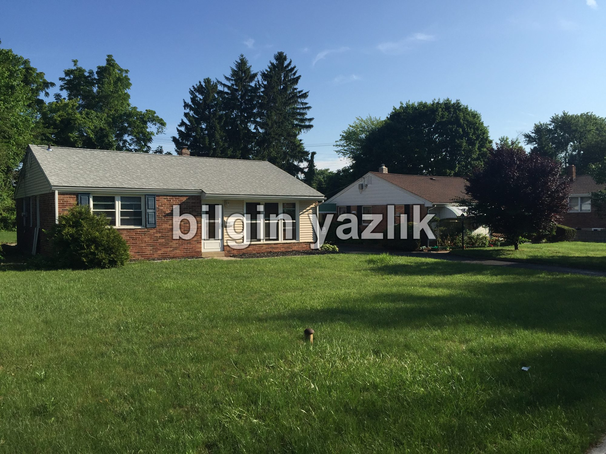
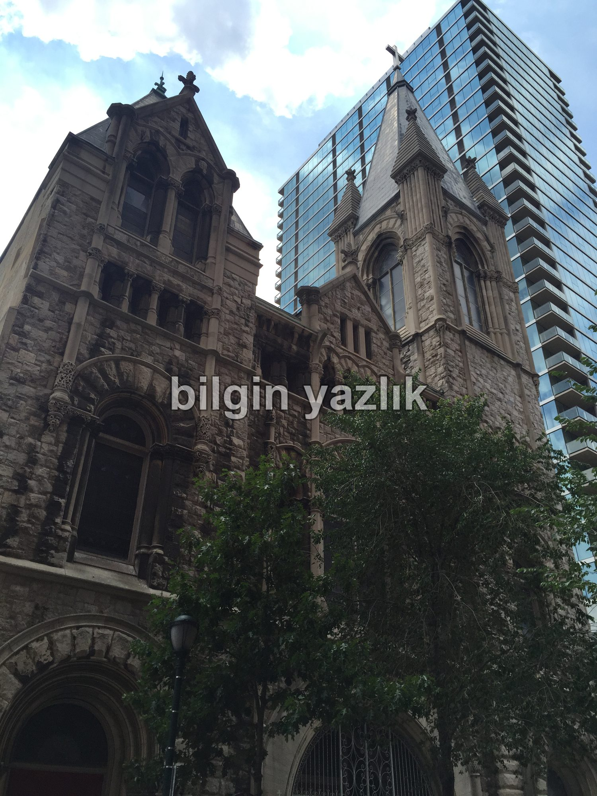
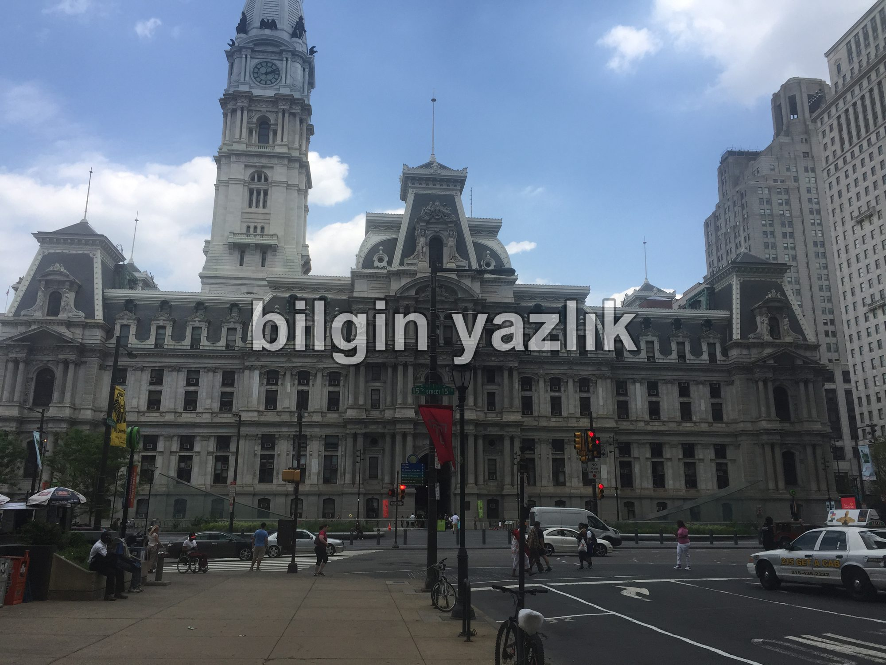
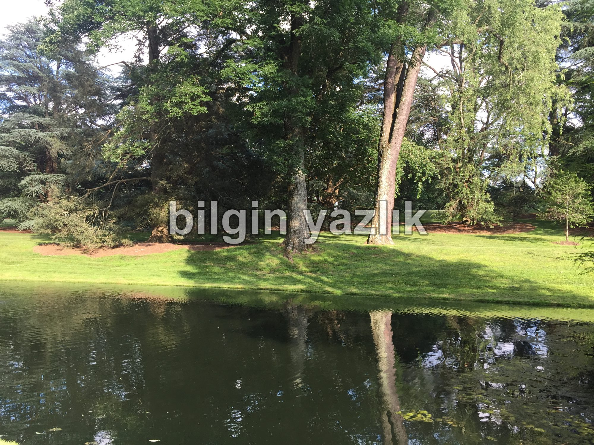
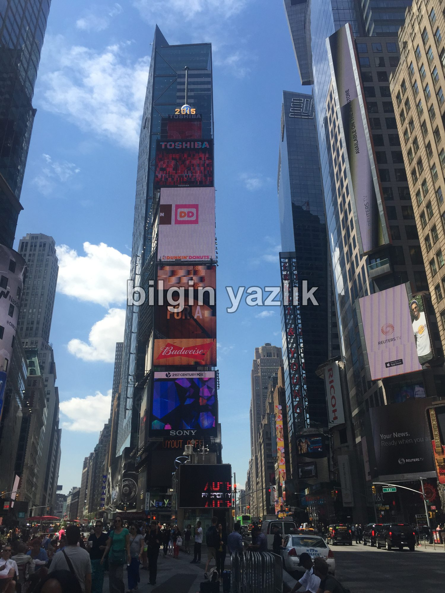
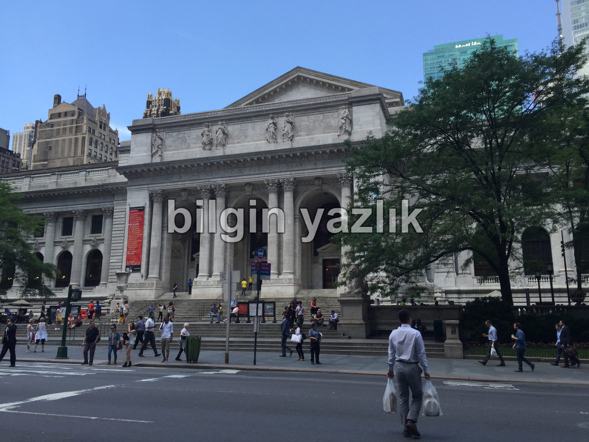
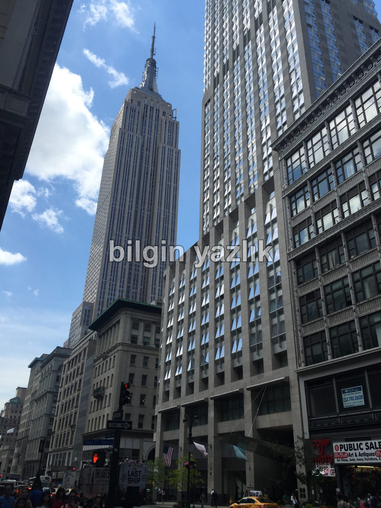
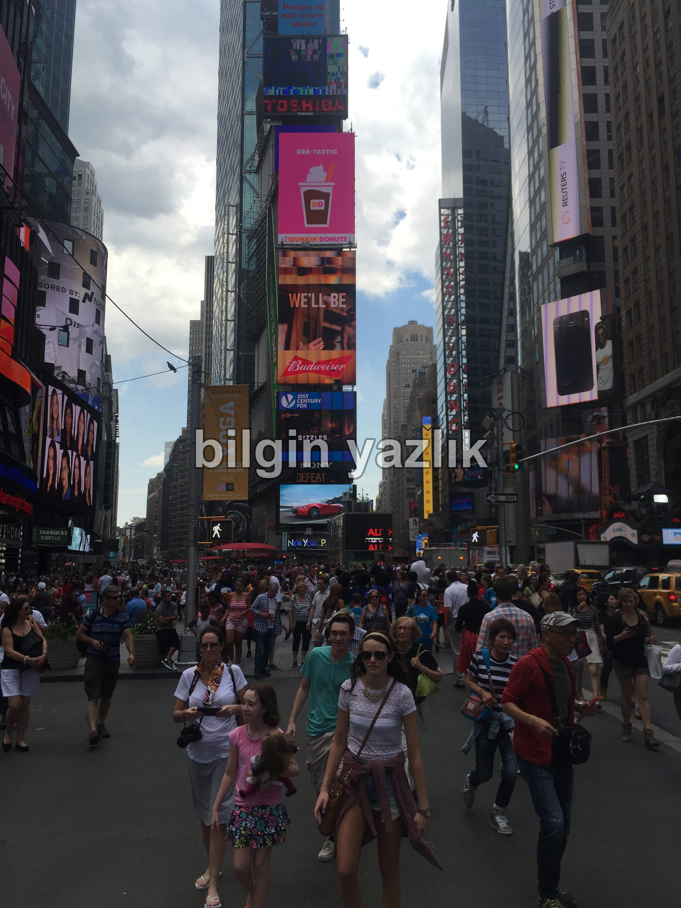

Amerika Seyahati Notları
Bu yazımda Amerika’ya gerçekleştirmiş olduğum kısa ama dolu seyahatten notlar aktaracağım:
Vize:
Amerika seyahati için herşeyden önce bir pasaportunuzun ve geçerli bir Amerikan vizenizin olması gerekiyor. 165 USD para ödeyerek Amerika Büyükelçiliğinden bizzat vizenizi alabilirsiniz. İnternette online bir form doldurup formun kapak sayfasını çıktı alıyorsunuz, pasaportunuz, bir fotoğraf ve bu çıktı ile vize görüşmesine katılıyorsunuz. Amerika yeşil pasaportlar da dahil olmak üzere vize uyguluyor ve vizeleri standart olarak 10 yıllık olarak veriyor.
Yolculuk:
İstanbul’dan doğrudan New York’a 10 saatten biraz fazla bir zamanda vardık. Kesinlikle Türk Hava Yollarını kullanmanızı tavsiye ediyorum, uçak içi eğlence sistemi ve yemekleri çok kaliteli. Cam kenarı ve orta koltuklar arada sırada gezmek, lavaboya gitmek için sıkıntılı yerler o yüzden koridor kenarında seyahati öneririm. İstanbul’da Atatürk hava limanından kalkışı gerçekleştirdik, uçuştan önce 1-2 saatiniz varsa lounge’ları kullanmanız menfaatinize olacaktır, açık büfe yemek, içecek, TV vb ile hava alanında beklediğinizi unutabilirsiniz. New York’ta ise John F. Kennedy hava alanına indik, hava alanı o kadar büyük ki terminaller arası dahili tren hattı bulunuyor. Türkiye çıkışında 15 dk. Amerika girişinde ise 45 dk. pasaport kontrol sırası bulunuyor.
Araç Kiralama:
Amerika içerisinde seyahat etmek için araç kiralamanızı şiddetle öneriyorum, çünkü Amerika içerisinde toplu taşıma ile birçok güzelliği kaçırabilirsiniz. Büyük alışveriş merkezleri, parklar, görülmesi gereken turistik yerler genelde toplu taşıma ile ulaşılamayan bölgelerde yer alıyorlar. Ortalama bir sedan otomobilin günlük kirası 50 USD, bir deponun 40 USD’ye dolduğunu da hesaba katarsak aslında oldukça hesaplı bir ulaşım aracı oluyor. Amerika’da yollar geniş, otoparklar geniş, otomobiller geniş, özetle Amerika otomobil ile seyahat için harika bir yer.
Amerika’da Trafik:
Yol boyunca gözleriniz açık ve tabelalarda olmalı, çünkü sürekli gerekli uyarılar tabelalarda yer alıyor. Şerit kullanımı Amerika’da çok önemseniyor, rastgele şerit değiştirmek, dönülecek şeritten dönmemek gibi hareketler hoş karşılanmıyor. Yol üzerinde şeritler hakkında yönlendirici yazılar bulunuyor, örneğin “Right Lane Must Turn Right” gibi, dolayısı ile must ifadesine dikkat ederek sağa girdiğiniz andan itibaren sağa dönmeme şansınız bulunmuyor. Şoförler birbirlerine müthiş derecede saygılı, takip mesafesini kesinlikle koruyorlar, otoparktan geri geri çıkarken size yol veriyorlar vs. Trafik ışıkları Türkiye’deki gibi arabanın durduğu noktada değil de arabanın durduğu noktanın karşısındaki kavşağın ortasında yer alıyor, böylece kafayı eğmeden ışığı net görebiliyorsunuz, ışığı görünce ışığın dibinde değil dur çizgisinde duruyorsunuz. Hız limitleri yollara göre değişiyor, genelde 50-60 mil arası hız yapabiliyorsunuz ama otoyolda dahi 60 milden fazlasını görmedim. Bazı otoyollar 6 gidiş, 6 dönüş şeklinde ama 3’er 3’er bölünmüş yollardan oluşuyor, bu yollarda otobüs ve kamyonlar ile otomobil trafiği ayrı şeritlerden akıyor. Kurallara uyduğunuz sürece müthiş güvenli bir sürüş gerçekleştirebilirsiniz. Trafikte dinleyeceğiniz radyoların hemen hepsi popüler İngilizce şarkılar çalıyorlar. Amerikalılar büyük otomobil kullanmayı seviyorlar, çok sayıda suburban aynı anda sizi sollayabiliyor. Tüm mağazaların, alışveriş merkezlerinin, restoranların kapılarında devasa otoparklar bulunuyor, araç parkı burada hiç sorun değil. Otoyollarda EZ-Toll adlı otomatik geçiş ve ücret ödeme sistemi bulunuyor, aracınızda EZ-Toll kartının bulunması önemli zira bazı geçişlerde para ödeyebileceğiniz bir kasiyer bile bulunmuyor ve ceza yiyorsunuz, bu nedenle kartın mutlaka bulunması gerekiyor. Yollar bakımlı ve temiz, bir yol çalışması varsa dahi inanılmaz güvenlik önemleri alınıyor, kilometrelerce öncesinde şerit daralacağı ve çalışmanın var olduğu anlatılıyor.
Şehir içi ulaşım konusuna gelecek olursak; bu konuda net olarak şunu söyleyebilirim ki New York şehir merkezine kesinlikle aracınızla girmeyin, inanılmaz kalabalık ve zor bir trafiği var fakat Philadelphia tecrübeme dayanarak Philadelphia içerisinde rahatlıkla araba kullanabilirsiniz. Burada önemli olan husus aracı park etmek, genel itibari ile yol kenarlarına park edebileceğiniz özel renkler ve tabelalar ile işaretlenmiş ücretsiz park yerleri bulunuyor, fakat bu yerler genelde dolu olduğu için ücretli ve kapalı park yelerine girmeniz gerekecektir, ben günlük 14 USD’ye Philadelphia’da araç park ettim, New York’ta ise saati 12 USD’den park edebiliyorsunuz. Birçok parkta elektrikli araç park noktası da bulunuyor, böylece elektrikli aracınız gün boyu şarj olabiliyor.
Son olarak eğer yabancı iseniz mutlaka bir navigasyon yazılımı ile seyahat etmeniz gerekiyor, otoyollarda dönüşleri kaçırırsanız bir daha geri dönmeniz çok zor olabiliyor. Ben gitmeden telefonuma Nokia Here Maps yükledim ve gerekli haritaları download ettim, Amerika’da internet kullanmadan tamamen ücretsiz navigasyon kullanmış oldum.
Amerika’da Yemek:
Amerika’da yemek ciddi bir problem oldu bana, yiyebileceğim şeyler o kadar kısıtlı idi ki sadece hamburger ve pizza yiyebildim. Philadelphia içerisinde restoranların yoğun olduğu sokaklar o kadar pis kokuyor ki tarifi mümkün değil, bu kokunun üstüne gidip de oralardan yemek yemek midesiz olmayı gerektiriyor. Hindi, dana, balık bol bol tüketiliyor, fakat o kadar yoğun baharat ve kötü kokulu yağ kullanıyorlar ki yemek istemiyorsunuz. Hamburger veya pizza menü 8-10 $ civarında tutuyor, limitsiz kola ile yemeğinizi yiyebiliyorsunuz.
Amerikan Halkı:
Amerikan Yaşam Tarzını Ben Şöyle Yorumladım:
- Sabah 06:00’da işe gitmek üzere yola koyuluyorlar.
- İş ahlakları tam ve mesailerini mümkün olan en verimli şekilde geçiriyorlar.
- Büyük, geniş, motor hacmi yüksek, lüks, tam donanımlı otomobiller kullanıyorlar.
- Genelde tek katlı bahçeli evlerde lüks içinde yaşıyorlar.
- Para kaygıları yok, diledikleri şeyi etiketine dahi bakmadan alabiliyorlar.
- Özellikle Cuma ve Cumartesi gecesini çoğunluk dışarıda geçiriyor.
- Yemek yapmayı sevmiyorlar, basit ve hızlı yiyip hayata devam etmeyi tercih ediyorlar.
- Birbirlerine karşı müthiş saygılı, devletini ve hükümetini seven, tüm kurallara harfiyen uyan bir toplum olmuşlar.
- Çalışmak istemeyen ya da çalışamayan kişiler homeless olarak sokaklarda yaşıyorlar.
- Sağlık sistemi tamamen paraya dayalı ve acımasız.
- Gündelik işlerin neredeyse tamamını siyahiler yapıyorlar.
Philadelphia’da Görülmesi Gereken Yerler:
Philadelphia yeşillikler içerisinde, deniz kenarında kurulu büyük bir şehir. Tarihi açıdan ise Amerikanın bağımsızlık mücadelesinin başladığı şehir olarak biliniyor. Koca koca gökdelenler, geniş ve düzenli caddeler, çok sayıda katlı otopark, şehri çalışma şehrine dönüştürmüş. Vakit çok dar olduğu için şehir merkezinde Love Park olarak adlandırılan parka gidebildim sadece. Bu parkın da işin aslı bir numarası yok sadece ortasında 2,5 metre yüksekliğinde bir love yazısı var, etrafında gençler paten yapıp takla atıyorlar, hepsi bu.
Şehrin biraz dışında Longwood Gardens isimli botanik bahçeyi de görme fırsatım oldu. Burası gerçekten çok güzel bir bahçe ve bir tabiat severseniz mutlaka görmelisiniz. Girişi ücretli, sanırım 10 $ gibi bir ücret ödedik, içerisi oldukça geniş ve bir harita ile geziyorsunuz. Amerikalılar yönlendirme ve tanıtma işinde çok iyiler, her yer tabelalar ile dolu ve rahatça gezebiliyorsunuz. Farklı iklimleri bünyesinde barındıran büyükçe bir serayı gezdik, çok sayıda farklı bitki türü burada inanılmaz sağlıklı bir biçimde yetiştiriliyor. Alan içerisinde birkaç göl de bulunuyor. 20 metrelik ağaçların arasında, harika bakımlı çim alanların içerisinde kuş sesleri eşliğinde geziyorsunuz. Burası yıllık abonelik de yapıyormuş, Philadelphia’da yaşıyor olsam kesin yıllık üyelik yapar çocuklarımla giderdim dediğim bir yer oldu burası.
Amerika’da Alışveriş:
Evet, Amerika’da alışveriş yapılabilir, hem ucuz hem de kaliteli malzeme bulmak mümkün. İyi bir araştırma yaparsanız gerçekten uygun fiyata giyecek, aksesuar, elektronik eşya, yiyecek, içecek bulmak mümkün. Geniş bir alana yayılmış olarak tasarlanmış tek katlı dükkânlardan oluşan alışveriş merkezlerinde alışveriş yapmak çok zevkli oluyor. Elektronik aletler ise genelde Türkiye ile benzer fiyatlara satılıyorlar.
New York Deneyimi:
İstanbul ve Roma görmüş biri olarak söylüyorum; ben hayatımda böyle karmaşık, böyle yoğun bir trafik daha görmedim (Manhattan’dan bahsediyorum). Üstelik otopark bulmak çok zor ve pahalı. Şehrin altından üstünden her yerinden trafik akıyor, ana caddeler geniş ve düzenli ama ara sokaklar tam bir keşmekeş. Tavsiyem gideceğiniz yere yakın bir otopark bulup aracınızı buraya bırakın daha sonra gezin, yol kenarına araç park etmek yasak ve tehlikeli.
New York harika bir şehir, canlı, heyecanlı ve hızlı bir şehir. Ana caddesine düştüğünüz an insan trafiği sizi sürüklüyor zaten, her yerde dev ekranlar ve cıvıl cıvıl insanlar var. New York’ta gezmek, alışveriş yapmak çok keyifli, mutlaka görmek lazım. Bir yanda Müslüman namazını kılarken diğer yanda Yahudi Tevrat okuyor, herkes birbirine saygılı ve müthiş güçlü bir devlet otoritesi var.
New York’un kalbi olan Times meydanına mutlaka uğrayın, Broadway’in önünden yürüyün, bağımsızlık heykeli ile poz verin, New York anlatılamayacak kadar güzel bir şehir.








Bu yazı taliyol arşivinden taşınmıştır. · özgün kayıt